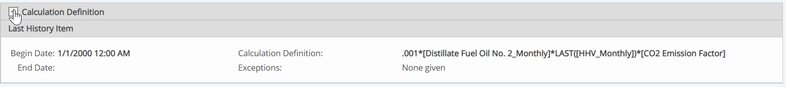
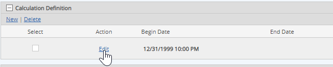
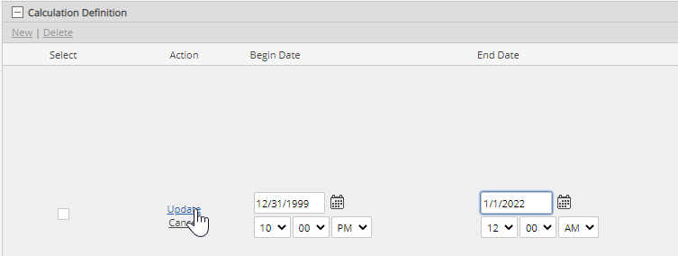
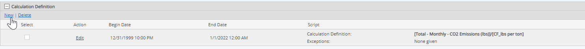
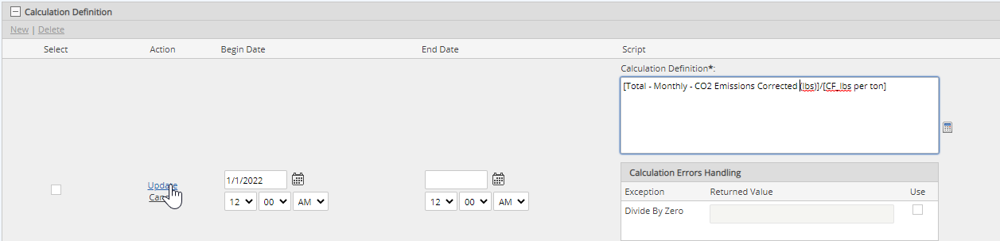

The formula for a calculation is maintained in a calculation history. You can edit the formula and add a new value history when a calculation needs to change. The system automatically keeps and displays a record of the versions of the calculation and the time periods for which each version is used.
Before editing a current calculation formula, you should review any dependencies and existing data points, to avoid excess re-calculations.
To edit the formula for a calculated requirement:
Right click the calculated requirement and select Properties > Edit.
In the Calculation Definition section, the current calculation value is shown.

If you need to reference requirement values at a different location in the System Model, add the requirements to the Calculation Requirements box before editing the formula.
Properties View mode shows the full path of referenced requirements in the calculation definition, while Properties Edit mode only shows the requirement names.
Click the plus sign (+) in the Calculation Definition bar to expand the history.
You will need to set an End Date for the current history first, before you can add the new calculation history value.
Click Edit to edit the current value.

Enter an End Date for the calculation history. Then click Update.

Alternately, you can edit the existing formula, then click Update.
If you edit the existing formula, all existing data for the calculation and dependent data will be re-calculated. This may potentially result in loss of data, including existing task and event data.
After setting an End Date for the current calculation history, click New to add a new calculation history.

Click the calculator button to create the calculation in the Calculation Editor.
Build the new calculation using the calculator, then click Save.
In the requirement properties form, enter the Calculation Begin Date. Click Update.
The Calculation Begin Date is the date from which the new calculation should be used. The begin date can be the same as the end date on the previous formula, to keep the calculation continuous.
